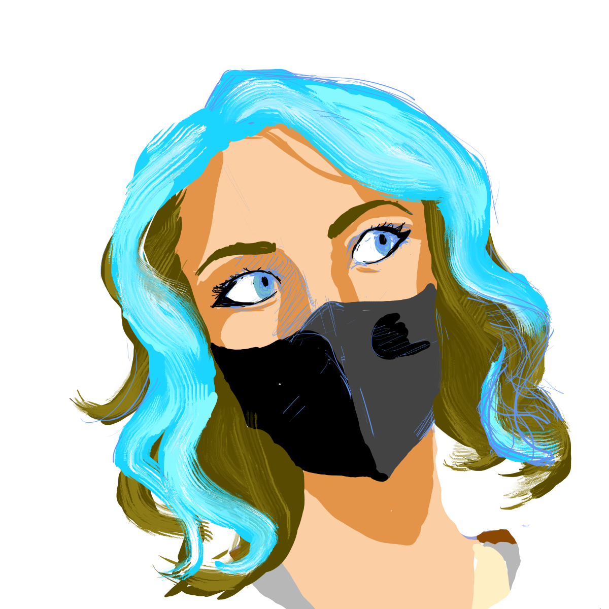

SOBRE MI
Biografía

¡EY! Soy la creadora que hay detrás del nombre Naduazca. Más conocida por amigos y familiares como Nadia Diaz, una artista joven, procedente de los Pirineos catalanes.
Ahora más que nunca aprovecho para aprender cada dia y crear arte que parte del entorno y las personas que me acompañan en este viaje.
"Vivir es complicado pero entender cómo vivir lo es aún más".